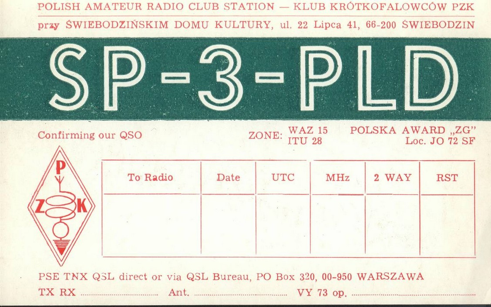

O klubie
Klub Krótkofalowców SP3PLD działa przy Świebodzińskim Domu Kultury w strukturach Polskiego Związku Krótkofalowców.
Jak to się zaczęło
Klub krótkofalowców SP3PLD został założony w 1981 roku przez kolegów Ryszarda SP3HBF oraz śp. Jana SP3BBZ.
Za dzień powstania klubu przyjmujemy rok nadania znaku SP3PLD. Od początku siedzibą klubu jest Świebodziński Dom Kultury — przez 27 lat w pomieszczeniach na poddaszu, a od stycznia 2009 roku w dwóch nowych pomieszczeniach piętro niżej.
Przez lata operatorzy klubu pracowali w zawodach i programach dyplomowych. Najważniejszym wyróżnieniem jest wpis stacji SP3PLD na listę ARRL DXCC Honor Roll MIXED.
Klub należy do Oddziału Terenowego nr 32 PZK w Zielonej Górze i współpracuje z innymi klubami regionu.


Dane stacji
- Znak
- SP3PLD
- QTH
- Świebodzin, pow. (B) SO
- Locator
- JO72SF
- Strefy
- WAZ 15 · ITU 28
- Wywoławcza
- 145.275 MHz FM
- TRX
- Kenwood TS-990S
- QSL
- via Bureau PZK
Do uzupełnienia: aktualny zestaw anten i sprzętu.
Gdzie nas znaleźć
Świebodziński Dom Kultury
ul. Piłsudskiego 39/41, 66-200 Świebodzin
Dniem klubowym jest piątek — spotykamy się w godzinach 18:00–20:00. Świebodzińska częstotliwość wywoławcza to 145.275 MHz.

Nasze karty QSL
Karty QSL, które klub wysyłał przez lata pracy w eterze. QSL prosimy kierować przez Biuro QSL PZK.